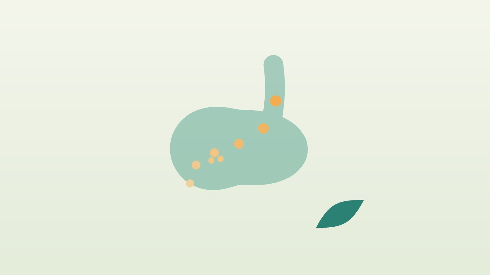

건강 칼럼 · 인천 만성소화불량 한의원
몇 달째 소화가 안 된다면, 만성 소화불량의 원인과 한방 치료

만성 소화불량 자가 점검
- 식사 후 오래 더부룩하고 무겁다
- 조금만 먹어도 금방 배가 부르다
- 명치가 쓰리거나 아프다
- 트림이 잦고 속이 메스껍다
- 이런 증상이 몇 달째 이어진다
- 소화제를 먹으면 잠시 나아졌다가 반복된다
이 체크리스트는 진단 도구가 아니라 상담이 필요한지 가늠해 보는 참고용입니다.
기능성 소화불량의 두 가지 형태
국제 기준인 로마 기준은 검사에서 원인이 보이지 않는 소화불량을 기능성 소화불량이라 하고 두 형태로 나눕니다.
- 식후불편증후군: 식후 더부룩함과 조기 포만감이 중심입니다. 위가 음식을 받아들이고 내려보내는 기능이 둔해진 경우가 많습니다.
- 상복부통증증후군: 명치 통증이나 쓰림이 중심입니다. 위 점막의 감각이 예민해진 경우가 많습니다.
두 형태가 섞여 있는 경우도 흔하며, 어느 쪽이 주된지에 따라 치료의 초점이 달라집니다.
검사가 먼저 필요한 경우
미국소화기학회와 캐나다소화기학회의 공동 진료지침은 60세 이상에서 소화불량이 있으면 위내시경으로 다른 질환을 확인하도록 권하고, 60세 미만은 헬리코박터균 검사를 먼저 받아 양성이면 치료하도록 권합니다. 나이와 관계없이 아래 신호가 있으면 바로 검사를 받으세요.
- 의도하지 않은 체중 감소
- 음식을 삼키기 어려움
- 반복되는 구토
- 검은 변이나 빈혈
- 가족 중 위암 환자
한의학의 비만(痞滿)이란?
한의학에서는 명치가 막히고 그득한 증상을 비만(痞滿)이라 했습니다. 여기서 '비(痞)'는 막혔다는 뜻으로, 눌러도 단단하지 않은데 속이 꽉 막힌 느낌을 말합니다. 『상한론』에는 명치가 막혀 답답할 때 쓰는 사심탕류 처방이 여럿 실려 있어, 오래전부터 소화불량을 중요하게 다뤄 왔음을 알 수 있습니다.
한의학은 위장의 기운이 '아래로 내려가는 것(降)'을 정상으로 봅니다. 위장의 힘이 약하거나, 긴장이 길을 막거나, 찬 기운과 열이 뒤섞이면 이 하강이 멈추어 음식이 머물고 트림과 더부룩함이 생긴다고 설명합니다.
나는 어떤 유형의 소화불량일까?
1. 비위허약(脾胃虛弱) 위장 힘이 약한 유형
- 이런 분에게 많아요
- 입이 짧고 마른 분, 쉽게 지치는 분
- 나타나는 모습
- 조금만 먹어도 배부르고 식후 졸리며 처진다
- 함께 오는 몸의 신호
- 묽은 변, 무기력, 얼굴이 창백함
- 진찰에서 보이는 모습
- 혀가 창백하고 이 자국이 있음
- 치료 방향
- 위장의 힘을 북돋는 방향 (육군자탕 계열)
- 오늘부터 해 볼 것
- 하루 세 끼를 적은 양으로 일정한 시간에 드세요.
2. 간비불화(肝脾不和) 긴장하면 체하는 유형
- 이런 분에게 많아요
- 스트레스를 많이 받는 직장인, 예민한 분
- 나타나는 모습
- 신경 쓰면 바로 체하고 명치가 막힌다
- 함께 오는 몸의 신호
- 한숨, 옆구리 답답함, 트림
- 진찰에서 보이는 모습
- 맥이 팽팽함
- 치료 방향
- 긴장을 풀어 위장 흐름을 돕는 방향 (시호소간산 계열)
- 오늘부터 해 볼 것
- 식사 전 1분간 천천히 숨을 고르고 먹기 시작하세요.
3. 한열착잡(寒熱錯雜) 찬 기운과 열이 뒤섞인 유형
- 이런 분에게 많아요
- 속은 쓰린데 찬 것을 먹으면 탈이 나는 분
- 나타나는 모습
- 명치가 막히고 꾸르륵 소리가 나며 설사와 쓰림이 함께 있다
- 함께 오는 몸의 신호
- 메스꺼움, 입이 씀, 장명
- 진찰에서 보이는 모습
- 설태가 노랗고 희게 섞임
- 치료 방향
- 찬 것과 열을 함께 조절하는 방향 (반하사심탕 계열)
- 오늘부터 해 볼 것
- 너무 뜨겁거나 찬 음식을 피하고 미지근하게 드세요.
4. 식적(食積) 음식이 정체된 유형
- 이런 분에게 많아요
- 과식과 야식이 잦은 분
- 나타나는 모습
- 신물 섞인 트림, 냄새 나는 방귀, 배가 빵빵하다
- 함께 오는 몸의 신호
- 입냄새, 변비 또는 냄새 나는 설사
- 진찰에서 보이는 모습
- 설태가 두껍고 끈적함
- 치료 방향
- 정체된 음식을 내려보내는 방향 (보화환 계열)
- 오늘부터 해 볼 것
- 저녁을 평소의 절반으로 줄여 보세요.
한의원에서는 어떻게 진찰하나요?
- 문진: 증상이 식후인지 공복인지, 어떤 음식에서 심한지, 검사 결과와 복용 약을 여쭙니다.
- 복진: 명치가 막혀도 부드러운지 단단한지, 눌렀을 때 아픈지, 출렁이는 소리가 나는지 봅니다.
- 설진·맥진: 위장의 힘, 긴장, 찬 기운과 열의 비중을 판단합니다.
침·약침·한약 치료는 어떻게 하나요?
1. 침 치료
- 중완(中脘): 명치와 배꼽 사이 가운데.
- 하완(下脘): 중완과 배꼽 사이. 음식이 아래로 내려가도록 돕습니다.
- 공손(公孫): 발 안쪽 엄지발가락 뼈 뒤. 내관과 짝을 이뤄 명치 답답함에 씁니다.
- 족삼리(足三里): 무릎 아래 바깥쪽. 위장 기능을 돕는 대표 혈입니다.
2. 약침
등 가운데의 비수(脾俞)·위수(胃俞) 부위 등 위장과 관련된 경혈에 약침을 적용해 굳은 등 근육과 복부 긴장을 풀어 줍니다.
3. 한약
유형별 처방을 바탕으로, 식후불편형은 위장 운동을 돕는 쪽으로, 통증형은 위의 예민함을 가라앉히는 쪽으로 비중을 조절합니다.
치료는 어떤 순서로 진행되나요?
- 첫 진료 검사 필요 여부를 확인하고 형태와 유형을 정합니다.
- 1~4주차 주 1~2회 침 치료와 한약으로 식후 더부룩함이나 명치 통증을 먼저 줄입니다.
- 5~8주차 식사 습관을 함께 바꾸며 치료 간격을 늘립니다.
- 유지기 스트레스나 과식이 잦은 시기에 맞춰 짧게 관리합니다.
기간과 횟수는 증상이 얼마나 오래되었는지, 동반 증상이 무엇인지에 따라 달라지며, 진찰 후 개인별로 안내합니다.
위장을 편하게 하는 식사 습관
- 양과 시간: 세 끼를 일정한 시간에, 평소의 70~80% 양으로 먹습니다.
- 씹기: 국물에 밥을 말아 빨리 넘기지 말고 천천히 씹습니다.
- 저녁: 기름진 음식과 밀가루 음식은 저녁에 특히 줄입니다.
- 집중: 식사 중 스마트폰을 보지 않고 식사에 집중합니다.
- 피할 습관: 끼니 거르기, 탄산음료로 소화시키기, 식후 바로 눕기, 소화제를 습관적으로 먹는 것을 피합니다.
- 지압: 식후 손목의 내관혈과 무릎 아래 족삼리혈을 1분씩 눌러 줍니다.
다른 진료가 먼저인 경우
- 60세 이상이거나 경고 신호가 있으면 내시경을 먼저 받으세요.
- 오른쪽 윗배 통증이 기름진 식사 뒤 반복되면 담석을 확인하세요.
- 운동할 때 명치나 가슴이 조이면 심장 질환을 확인해야 합니다.
자주 묻는 질문 Q&A
- Q1. 헬리코박터균이 있으면 소화불량이 생기나요?
- 원인 중 하나일 수 있어 지침은 검사와 제균 치료를 권합니다. 제균 후에도 증상이 남으면 위장 기능을 조절하는 치료가 필요합니다.
- Q2. 위장약을 먹어도 그때뿐이에요.
- 위장의 리듬과 생활 습관이 그대로라면 반복되기 쉬워 원인을 함께 살펴 치료합니다.
- Q3. 치료는 얼마나 걸리나요?
- 보통 4주 정도 침 치료와 한약을 함께 하며 변화를 확인하고 간격을 조절합니다.
- Q4. 스트레스를 받으면 바로 체해요.
- 긴장이 위장 운동을 억제하기 때문으로, 스트레스 반응과 위장 기능을 함께 다스리는 치료가 도움이 됩니다.
- Q5. 내시경은 얼마나 자주 받아야 하나요?
- 만 40세 이상은 국가건강검진에서 2년마다 위암 검진을 받을 수 있으며, 증상과 나이에 따라 담당 의사와 상의하세요.
- Q6. 소화가 안 될 때 굶는 게 좋은가요?
- 한두 끼 가볍게 먹는 것은 괜찮지만, 자주 거르면 위장 리듬이 더 흐트러집니다.
- Q7. 체했을 때 손을 따는 게 도움이 되나요?
- 위생 문제와 감염 위험이 있어 권하지 않습니다. 지압과 따뜻한 물, 휴식이 더 안전합니다.
- Q8. 커피가 소화를 돕는다던데요?
- 일부에게는 위산을 늘려 쓰림을 키울 수 있어 공복 커피는 피하세요.
함께 읽으면 좋은 칼럼
건강 칼럼 전체 보기 →


참고 자료
- Moayyedi PM, et al. ACG and CAG Clinical Guideline: Management of Dyspepsia. American Journal of Gastroenterology, 2017 — 원문
- Stanghellini V, et al. Gastroduodenal Disorders (Rome IV). Gastroenterology, 2016 — 원문
- 장중경(張仲景), 『상한론(傷寒論)』 사심탕류
- 질병관리청 국가건강정보포털 — 원문
※ 이 글은 일반적인 건강 정보이며, 개인의 상태에 따라 치료 방법과 결과는 다를 수 있습니다. 정확한 진단과 치료는 진료를 통해 결정됩니다. 침·약침 시술 후 드물게 멍, 통증 등이 생길 수 있습니다.